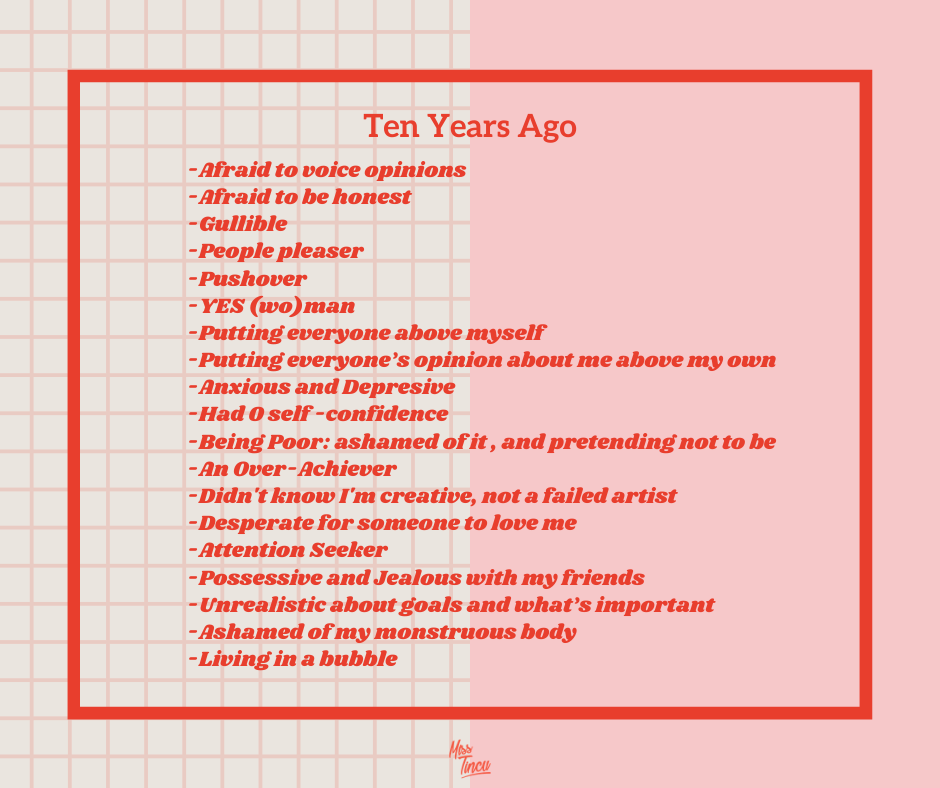
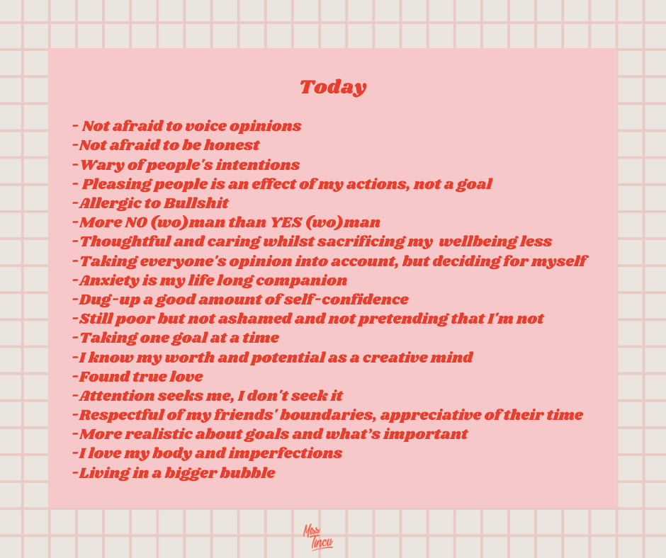

How to be your own person
11th Mar 2020
At 27 years old, most people perceive me as unapologetic, bold, a warrior fighting for what is right, fair, honest and inspirational. Which is kind of accurate [insert modesty here], but it’s important to note that I’m not all these things simultaneously. Sometimes I’m just too busy overthinking myself to death, having meltdowns and self-sabotaging whilst still being a nice person [yes, I can multitask that way 😂]. To understand where I’m coming from and what “qualifies” me to tell you how to be your own person, here’s a glimpse into the worst parts of myself from ten years ago:

I worked hard to improve and change, because I was sick and tired of all the unecessary unpleasantness I was allowing myself to live in. I do hope that you’re not imagining that I managed to achieve this by sheer will. On the contrary, it was more a mix of taking chances, trying things outside of my comfort zone and seeking to surround myself with people that see my value, respect me and support me without kissing my ass to obtain something from me 💅. Of course, I derailed from this “master plan” of becoming my own person on a few occasions because my auto pilot was strong - if I wouldn’t pay attention to something for a little while, I was instantly switching back to my old ways because it was easier and more comfortable. Right now I’d say I’ve come pretty far, and I’m proud of what I achieved, but I didn’t do it alone - it’s the result of many people giving me a hand, helping me in times of need or giving me a chance when no one else would.
I think becoming who you are and maintaining it is a lifelong process, and something we always need to pay attention to and work on it, because as I said - it doesn’t take much to revert to your unhealthy old ways. Here’s where I am now:

Most of the above ideals are not a 5 minute job, it takes years to get there and it won’t be easy - but it’s all worth it, I can promise you that. And just because I changed, it doesn’t mean that I don’t still doubt myself at times, or fall back a little into my old ways at times. It just means that I make a conscious effort daily to stay true to myself and not compromise my wellbeing for anyone.
Without further ado, here are my tips on how to be your own person:
Always have your own best interest at heart
If you’re like me, it’s difficult to constantly have your defences up and think of yourself 24/7. So having your own best interest at heart is also aided by building healthy relationships with those around you, choosing a work environment where you can be yourself and not having to walk all over your values often and reducing contact with toxic people that you can’t just remove from your life (such as family or old friends). Seeking what’s best for you is not always easy or obvious, but a way to do this could be reflecting on what you don’t want, that way it will get a little easier to follow what you want for yourself. In order to have your own best interest at heart, you’ll need to dig deep and be honest with yourself. Be selective of the people you surround yourself with, the situations you allow yourself to be part of, the environments where you spend your time. You won’t be able to count on family, friends, significant others and work colleagues to have your best interest at heart because most of them are too busy to chase their own interests. So it’s important for you to do the same.
Voice your opinions
It took me years, years I tell ya, to start voicing my opinions. This is because the environment I grew up in never empowered me to have an opinion in the first place. However, the first step for me was to start voicing my opinions in writing on my first blog back when I was a teenager - that’s where I said the things I didn’t have the courage to say out loud. A few years later, I was forced by University course assignments to start saying what I think. After a while, I managed to start saying what I think at work even if it wasn’t necessarily encouraged to do so. A beneficial factor for me starting to voice my opinion more and become even closer to being the most “my own person” that I’ve ever been - was having a significant other who has my best interest at heart, and empowered me to be my true self. You can find such support in other types of relationships, it doesn’t have to be a significant other. At some point I became tired of my own bullshit - by which means tired of the unsaid things that were imploding inside me and I couldn’t bear it anymore so I started to speak up more - with my family, with my friends, at work, and with friends of friends (I was already voicing my opinions at home, just not so much in public).
The key to voicing your opinions is to just start doing it. Take any little opportunity you get and practice, practice, practice. Lady at the bakery gave you the wrong type of bread? Say it! Your work colleague is a jackass? Say it! Don’t want to go out? Say it! Not being paid enough? Say it! Think of it like this: saying what you think might be uncomfortable for 10 mins, but it passes away. Sucking it up, however, can force you to take a commitment or be in a shitty position that you don’t want for hours, days, years! So 10 minutes of feeling like crap sounds good in hindsight, right?
Set Personal Boundaries
Boundaries are key for maintaining healthy relationships with people and set clear guidelines of how you want, and need, to be treated.
Most people will walk all over you no matter what relationship you have with them - that is, if you let them. It might take you some time to figure out what your boundaries are but rest assured, life experiences will highlight them for you, just pay attention. For example, back in the day I had no clue that when someone’s actions or words made me feel bad about myself and worthless, it actually meant that they crossed my personal boundaries. It won’t always be clear as day that someone is doing this to you, or they might not even realise it, but either way - if as a result you feel like shit it’s time to take action. In a sense, it’s like taking your power and self-worth back from those who are trying to take it away from you.
My personal boundaries, to name a few, resulted from being sick and tired of the following: not respecting me/my work/my time, taking me or my kindness for granted, toxic family ties, ageism, sexism, being unprofessional or unethical. Now, when you feel like you need to set some boundaries with certain people, here are my top three ways of setting boundaries:
- Reduce contact with family/old friends when: trying to reinforce inexistent boundaries might not be met with openness or the mental ability to comprehend what you are trying to communicate.
- Cut people out of your life when they’re energy vampires/soul sucking friends/lovers: With a lovely touch of toxicity, these people might have been all lovely at first until you got to know them better and vice versa. Now, you just feel like a brainwashed puppet that allows them to suck the life out of you and walk all over you.
- Ghosting (not ideal, but necessary sometimes) - when reducing contact or cutting people out of your life doesn’t work, the last option standing is ghosting them. To me, ghosting is not something aligned with my values and ethics. However, I do think it’s necessary for self preservation at times.
Accept your imperfections
There are many things you can change about yourself if you work hard enough. However, there are also many things you can’t change. A few of my imperfections include: taking things personal, being too nice, too obsessed with being professional and doing the right thing, too sensitive, an overthinker with high levels of anxiety. To you, most of these things might not seem like imperfections, but to me they are because these imperfections get my feelings hurt a lot and make me feel stupid and bad about myself. But the good thing is: once you accept and acknowledge your imperfections, it can get better. Not accepting these things about yourself and fighting your own self is just like lying to yourself. And when you lie to yourself, you’re lying to everyone around you - and let me tell you, people will see right through your bullshit. Are you a whiny bitch? Are you a pushover? A passive aggressive person? Embrace it! When you get tired of your own bullshit, the motivation to do something will kick in. Of course, it’s not enough to embrace your imperfections, you have to also figure out how to change the outcome of the situation you dragged yourself into because of the way you are. Set boundaries, remove people from your life if they bring out the worst in you or make you feel bad about yourself. Extract yourself from environments and situations that are toxic for you and it will be easier to accept who you are without these distractions.
Bring out your fashion more
Bring out your fashion more
I’m a very visual person in the sense that what I see in the mirror influences my mood. I’m also anxious and don’t exude self confidence 24/7. This is why makeup, the color of my hair, grooming and clothes are a way to express myself and a reminder of who I am (in case I forget, you know). All these serve like armor and war paint before I get out of the house and face the day. No matter how anxious or stressed out I get, on the verge of tears from bottled anger - I know that when I look at myself in a toilet mirror I’ll be reminded that I’m 100% that bitch. There are months when I’m so exhausted and burnt out that I can’t muster the energy to get all glammed up - but I still make sure I have something on me to bring me down to earth. No matter what gender you are, if you are into fashion, hairstyling, make-up or not - there must be something you can wear that makes you feel pretty damn awesome about yourself.
Get to know yourself better
You don’t get up one morning and discover that you found out everything about yourself. Oh, no! This is a lifelong project. However, there are many ways you can find out the good and the bad things about yourself - introspection, analysing what you are good and bad at, hearing what people who see through your bullshit say, reviews of your work etc. Sure, it’s nice when people compliment you, and it hurts when they criticize you. But I think we are not 100% the way we see ourselves, nor how others see us. When people comment, there is always a little of them projecting their qualities or imperfections on you and subjectivity involved. In my opinion, the truth is somewhere in the middle. As long as you keep yourself grounded and not underestimate yourself or go full on hubris - you’ll get a pretty good sense of who you are at this point of your life.
Love and trust yourself
When I had zero self-confidence, I thought this idea was utter bullshit. Are you saying I am not a worthless piece of crap without talent like my step mother told me I am? Get outta here!
For years I had moments where I thought “that’s it! From this moment on, I love myself, I trust myself, I am confident” and bam! 2 hours later I still wasn’t any of these things. Because it’s not a decision you make on the spot, it’s a chain of actions, of setting boundaries and having experiences that teach you to stand up for yourself that get you to the level of wisdom that enables you to start loving, trusting, respecting and believing in yourself. For years, I let my power in the hands of others. I let others decide if I am worthy of respect, of trust, of being loved, of being trusted. But if you don’t feel or believe these things about yourself, why would others? In my case, I realised that I have to find my worth in other places. Not in the opinion of others, not in my skills and the results of my hard work - but in my own damn self.
After many failures and getting to the point where it affected my mental health and wellbeing, I realised that actually I do know my shit, I do have a lot of potential, I do deserve a good salary. Actions speak louder than words - and it will take a long time for you to start feeling this way about yourself - so until then, you can just act and present yourself in a manner that shows that you know what you can do, you have an idea of who you are and what you can do. Yes, a little “fake it until you make it” attitude can help you. Other people’s mean comments will still hurt - but deep inside, you will know the truth. When they go low, you go high. And slowly but surely, you will take your power back.
Learn to say NO
It might sound like it’s easy to say NO, but in reality, it can be a hard thing to do especially if you’re not used to it. Looking back, it’s astonishing to me on how many occasions I would have been better off if I would have been honest and said NO. This skill is detrimental for your survival and wellbeing, because sometimes you’ll have to put your foot down and say NO. Agreeing to every request might be easier in the moment, but you know you’ll hate yourself afterwards for juggling a million things with no time for yourself just because you couldn’t say one damn word - NO! In your head, this could come off as uncaring or selfish because it means letting some people down, causing them to dislike you for it or be criticized. There is however an upside to this: you’ll gain some respect for yourself and set some boundaries. Just because you made a commitment in the heat of the moment, it doesn’t mean you need to actually follow it through. You can change your mind and graciously remove yourself from the commitment you made - if you also add a little heartfelt honesty in there most people will appreciate it. As I’m a recovering pushover and YES woman, I still don’t master saying NO but I work on it every chance I get. When I’m not caught off guard, I say “I’ll think about it and get back to you”. If however I am taken by surprise, I might agree on the spot and decline later when I realize that I actually don’t want to do something or I can’t because I have no time for it.
Sometimes I still go ahead with things I don’t want to do because I want to help others or get outside my comfort zone - but that is something that I am willing to take responsibility for. No matter why you decide to not say NO, make sure you are at peace with this compromise, for the right reasons.
Understand your values and stand by them
You see, I understand my values and I stand by them as much as possible. But the reality is, there will be times when you’ll need to compromise a little. I mostly experienced this on a professional level. Values are in essence rules of conduct you live by - but there will be situations with some people where you will never win. In your personal life it’s slightly easier because you can cut people out of your life, reduce contact with them or ghost them. But at work you might be forced to collaborate with people that make your life a living hell - passive aggressive, selfish, ego-centered assholes, “cult leaders”, people that do the bare minimum and don’t care how it affects others. So it’s important to stand by who you are whilst still being able to adapt to working with toxic people that won’t give a shit about your values and boundaries - yay! Welcome to adulthood.
Don’t be selfish and ego-centered
Newsflash! Not everything is about you! It’s ok to be selfish and ego-centered when it comes to your self-preservation and wellbeing, as long as you don’t shove this down everyone’s throat. These traits come off in a negative light when you can’t have a proper conversation with someone because they make any topic about themselves and their experiences 24/7. Don’t get me wrong, I too talk about myself with people but it’s one thing to share a story and another to not even listen to what people are saying and constantly wait for a cue to talk about yourself. I think this occurs when you have no life outside school or work - and I’ve been this person, not gonna lie. The funny thing is that I had zero confidence in myself but still came off as a selfish ego-centered bitch based on this behaviour. So try not to be selfish and ego-centered to the point where no one wants to ever talk to you again.
Conclusion
Becoming your own person takes a lot of work, resources and time. However, it’s one of the best investments in yourself that you can ever make. It not only improves your life both on a personal and professional level, but it opens doors to new friendships and new opportunities. Remember: staying true to yourself is a journey, not a destination.
Have a great trip! ✨